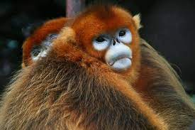

Localizado a lo largo de las montañas del centro de China, el mono dorado de nariz chata soporta algunos de los inviernos más duros de cualquier primate no humano puede soportar. Su capa de pelo larga y suave lo protege de los vientos helados mientras que su rostro desnudo soporta la mayor parte del frío. Ha sido cazado durante mucho tiempo por su hermoso pelaje, pero desde principios de la década de 1990, la caza furtiva se ha reducido gracias a una mayor protección del gobierno. No obstante, su número ha seguido disminuyendo a medida que se despejaron sus bosques para la obtención de madera y la creación de tierras de cultivo. Además, el turismo se ha expandido al amparo del crecimiento económico de China, y las manadas de monos se han visto fuertemente hostigadas y perseguidas para ser vistas. Tan solo alrededor de 120 ejemplares de esta especie sobreviven en la actualidad en estado salvaje.
